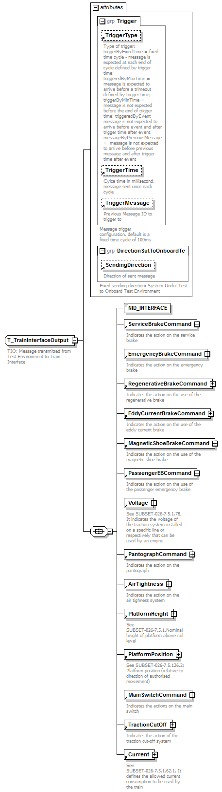
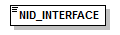

| diagram |  | ||||||||||||||||||||||||||||||||||||||
| children | NID_INTERFACE ServiceBrakeCommand EmergencyBrakeCommand RegenerativeBrakeCommand EddyCurrentBrakeCommand MagneticShoeBrakeCommand PassengerEBCommand Voltage PantographCommand AirTightness PlatformHeight PlatformPosition MainSwitchCommand TractionCutOff Current | ||||||||||||||||||||||||||||||||||||||
| used by |
|
||||||||||||||||||||||||||||||||||||||
| attributes |
|
||||||||||||||||||||||||||||||||||||||
| annotation |
|
||||||||||||||||||||||||||||||||||||||
| source | <xs:complexType name="T_TrainInterfaceOutput"> <xs:annotation> <xs:documentation source="Subset-094-9.2.2.2">TIO: Message transmitted from Test Environment to Train Interface</xs:documentation> </xs:annotation> <xs:all> <xs:element name="NID_INTERFACE" type="T_Interface" fixed="TIO"/> <xs:element ref="ServiceBrakeCommand"/> <xs:element ref="EmergencyBrakeCommand"/> <xs:element ref="RegenerativeBrakeCommand"/> <xs:element ref="EddyCurrentBrakeCommand"/> <xs:element ref="MagneticShoeBrakeCommand"/> <xs:element ref="PassengerEBCommand"/> <xs:element ref="Voltage"/> <xs:element ref="PantographCommand"/> <xs:element ref="AirTightness"/> <xs:element ref="PlatformHeight"/> <xs:element ref="PlatformPosition"/> <xs:element ref="MainSwitchCommand"/> <xs:element ref="TractionCutOff"/> <xs:element ref="Current"/> </xs:all> <xs:attributeGroup ref="Trigger"/> <xs:attributeGroup ref="DirectionSutToOnboardTe"/> </xs:complexType> |
| diagram |  | |||||||||||||||
| type | T_Interface | |||||||||||||||
| properties |
|
|||||||||||||||
| facets |
|
|||||||||||||||
| source | <xs:element name="NID_INTERFACE" type="T_Interface" fixed="TIO"/> |